eXp Realty · Agent Platform · AI UI/UX Design
One front door for new eXp agents
An AI navigator and a personal hub that help new agents find what they need — without first learning a dozen differently-looking systems.
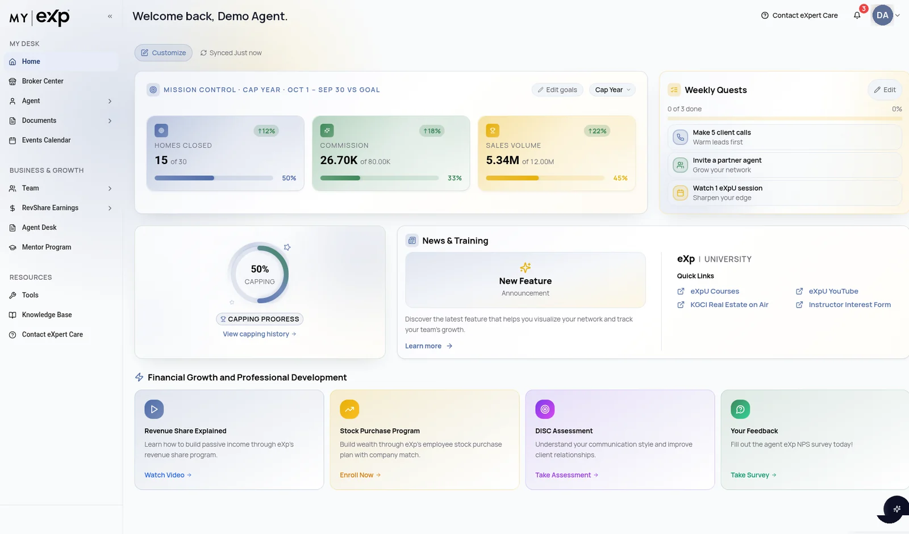
One front door
Many systems, the trade-off, and what shipped.
The Challenge
To answer a simple question, a new agent first had to know which tool to open.
New eXp agents walk into a world of many systems, and each one looks and behaves differently. Where is my revenue share, who is my sponsor, which transaction needs me — each question lived somewhere else. In NPS feedback, this struggle to find information was the #1 concern among new agents.
How might we give new agents one place to ask, and one place to trust?
The hub problem
The design problem was never just to make it prettier.
My eXp is meant to be the central hub for eXp agents: organization, revenue share, team and mentorship in one place. Agents still juggled many apps. The data they relied on had to be trustworthy and timely. The team shipped in a fast, roughly biweekly rhythm, where one bad data release could take the hub down.
The problem was: make one hub agents trust enough to stop opening other tools.
Three principles
Three principles
-
01
Drive agent value
Every feature has to earn its place by helping an agent run their business.
-
02
Be mindful of the agent
Design for the person in the field: new or experienced, US or Canada, capped or not.
-
03
Reduce the number of apps
Consolidate into My eXp instead of adding one more tool to learn.
Two products, one front door
We didn't replace the systems agents already use.
We gave them one place to ask and one place to trust, joined by single sign-on.
Mira
An AI chat assistant that agents reach with single sign-on. It answers questions in plain language and points agents to the right place, so they don't have to hunt through menus.
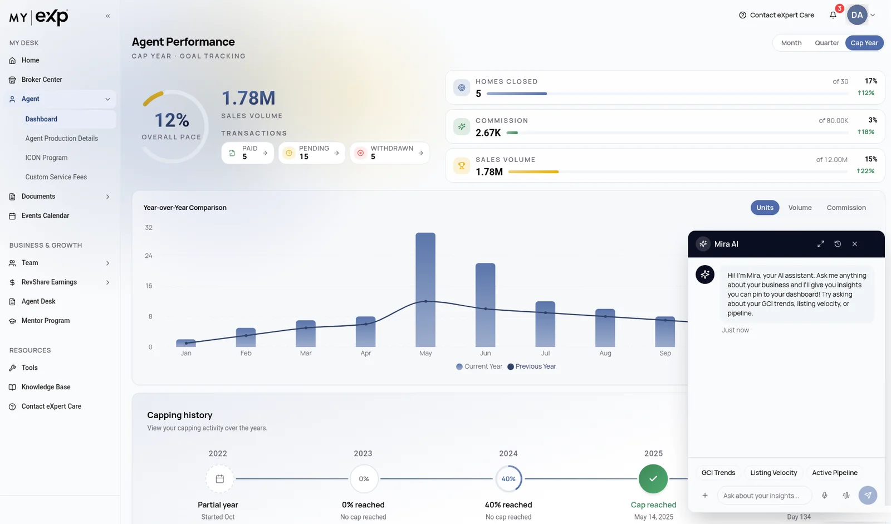
My eXp
The agent's personal hub for their organization, revenue share, team and mentorship. Mira reads from it first, and agents land in it when they need detail.
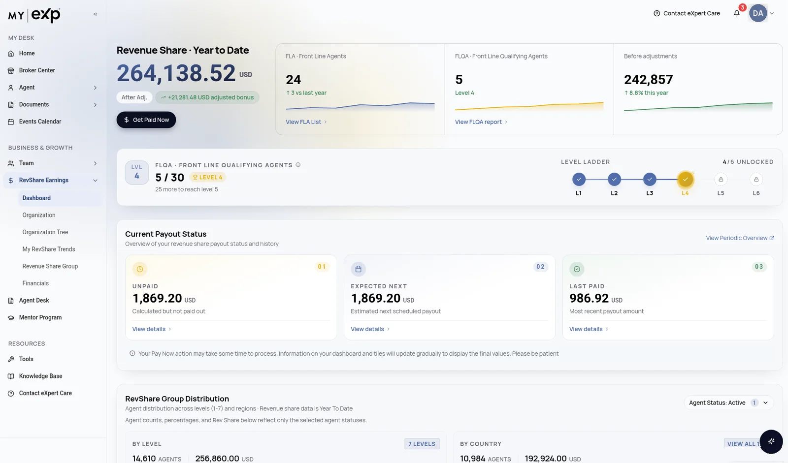
How Mira answers a question
Mira isn't another place to look things up.
It sits on top of the systems agents already use and does three things.
-
01
Start the conversation
On login, Mira opens with a “Good Morning” prompt. On each page it offers starter questions about that page.
-
02
Ground the answer
Mira draws on the agent's own data: productivity in My eXp, transactions in SkySlope, help articles in the eXpert Care knowledge base.
-
03
Answer, then hand off
A plain-language answer, a small chart where numbers help, and a next step: a deep link into My eXp, a pin to Home, or a route to eXpert Care when Mira can't help.
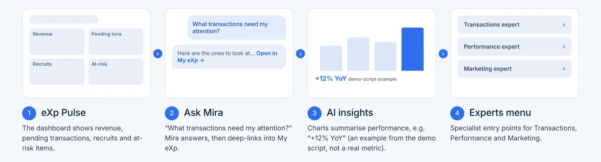
Discover & explore
Before designing anything, I pulled together what the team already knew.
That came from the Agent Platform and My eXp project hubs, and from early-adopter feedback.
-
01
Finding information was the #1 NPS concern
New agents struggle to find information across many systems that each look different.
-
02
Answers lived in separate places
Production data in My eXp, transactions in SkySlope, help articles in the eXpert Care knowledge base.
-
03
They needed one trusted view
Org, revenue share, team and mentorship — not one more tool to learn.
11 releases · Jan–Jun 2025
Monthly business demos
5 pods after the May 2025 reorg
The team shipped 11 My eXp releases between 11 Jan and 4 Jun 2025 (3.9.0 to 3.19.0), roughly every two weeks, with monthly business demos and sprint planning tied to each release date.
Where the evidence came from
- Agent Platform (Mira) project hub Key decisions, early-adopter NPS (June 2025), the feedback summary, UX demo scripts, go-live planning and the Hey eXp voice spec.
- My eXp project hub Product screenshots of Home, RevShare, Org Tree and the ICON Program, plus the roadmap themes.
- Early adopters NPS survey responses and thumbs-up / thumbs-down ratings on Mira's answers.
- Release rhythm A roughly biweekly ship cadence, with sprint planning tied to each release date.
Who we designed for
- Agent Performers
- Team Leaders
- Revenue Share Agents
- Residential
- US & Canada
- EN · ES · FR
Key MVP decisions
Mira starts the conversation, and stays honest about what it is.
-
01
AI grounded in My eXp data
Mira answers from the agent's own My eXp data, so the answer and the hub always agree.
-
02
External apps open in a new tab
Mira guides agents to the right place instead of trying to rebuild every system inside chat.
-
03
“Good Morning” prompts on login
Proactive prompts are in the MVP. Mira starts the conversation, so new agents don't face an empty chat box.
-
04
React front end
The MVP front end is built in React.
-
05
Luna knowledge base deferred
Luna is kept out of the MVP to protect scope. Mira draws on the eXpert Care knowledge base instead.
Five principles
An assistant agents can trust.
-
01
Their data, not general advice
Answers come from the agent's own My eXp, SkySlope and eXpert Care data, so the chat and the hub never disagree.
-
02
Show where the answer lives
Answers link into the My eXp screen they came from. In eXp Pulse, each pinned insight shows the question behind it and when it was last refreshed.
-
03
Navigate, don't replace
Mira points agents to the right system and opens it in a new tab. It doesn't rebuild every tool inside a chat window.
-
04
“I don't know” is a designed moment
When Mira can't answer, it suggests what it can do, or hands the agent to a person. It never leaves them at a dead-end apology.
-
05
Every answer can be rated
Thumbs up / down in the chat give the team a steady signal on which answers to fix first.
Six roadmap themes, reliability first
- Reliability & Trust Faster data and load times, data accuracy, security and privacy, test automation.
- Agent Self-Service Efficiency Personalization such as custom dashboards, and self-serve flows.
- Global Expansion & Localization Canada and international markets, localized content.
- Platform Consolidation & Cost Efficiency Fewer systems and licences, more of it built into My eXp.
- Mandatory Enhancements Exec requests, EXPCON and compliance work.
- Agent Production / Management “Move the needle”: visibility for team leads, org leads and mentors.
Design
Every pod got a working prototype, stories and edge cases at handoff.
Instead of long static spec cycles, the team moved ideas through an AI-assisted pipeline.
- 01
Define the problem
A BA frames the problem and the agent need.
- 02
UX Companion GPT
A custom GPT turns the problem into wireframes and flows.
- 03
Lovable AI prototype
The flow becomes a working, clickable prototype.
- 04
Design-lead approval
The design lead reviews and blesses the direction.
- 05
Handoff
Prototype, stories, acceptance criteria and edge cases go to the pod.
- 06
Build + QA together
Engineering and QA build and test against the prototype.
The master prototype went through several published rounds in the Lovable workspace: an archived master (Aug), a full My eXp Plus demo (Aug), Circle 1 MVP (Sep), Circle 3 full demo (Sep), and the current Master Prototype (last edited 2 Oct 2026), alongside focused spikes on team transaction transparency and mentor cards.
Where AI helped
I used AI to get to something clickable fast. Judgment stayed with people.
AI did
First drafts of flows. The UX Companion custom GPT turned a framed problem into wireframes and flows.
Working prototypes. Lovable turned those flows into a clickable app with realistic mock data, across 28 routes.
Fast iteration. Changes went into new published rounds, not a static file waiting on a rebuild.
I did
Framing and review. I checked every AI draft against the agent's real situation: new or experienced, US or Canada, capped or not.
Edge cases. The Demo Toggles show the states real agents hit (Canada, capped, empty quests, failed payments), so reviews cover more than the happy path.
The quality bar. Nothing moved to build without design-lead approval and a handoff of stories, acceptance criteria and edge cases.
Design evolution
Dark navy chrome gave way to one light system.
Before: earlier My eXp Home. After: Mission Control in the latest prototype.
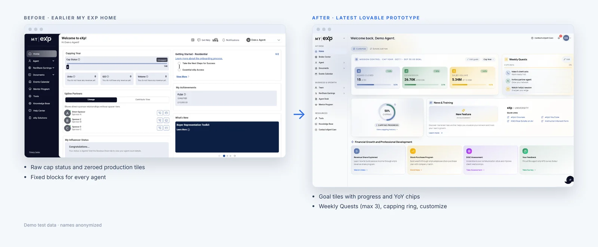
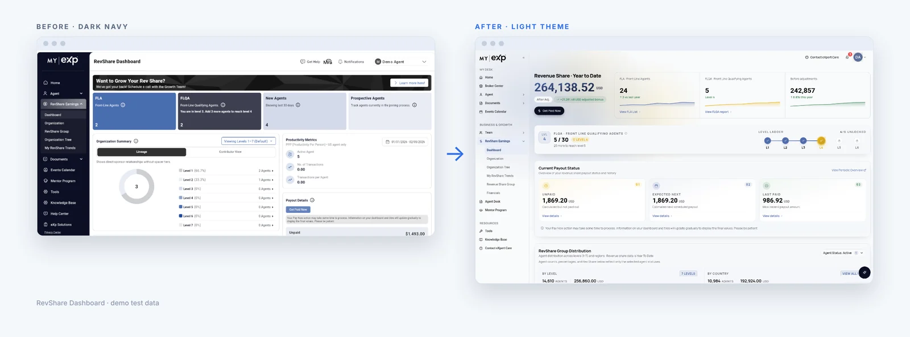
-
01
Motivation over reporting
Home became a goal-driven Mission Control: goals the agent sets, progress against them, year-over-year chips, and Weekly Quests capped at three.
-
02
Less cognitive load
Dark-navy blocks gave way to one light system: tinted off-white cards, soft shadows, category-tinted icon chips, bold numerals.
-
03
Personalization
Agents can customize Home by dragging, hiding and resetting widgets. Upline Partners and Getting Started became optional widgets.
-
04
Whole new areas
Team roster and reconciliation, business transactions and referrals, Documents, Mentor flows, Contact eXpert Care and Notifications.
The latest prototype
Key screens
Insight values in these screens are prototype mock data, not results. Names are anonymized demo data.
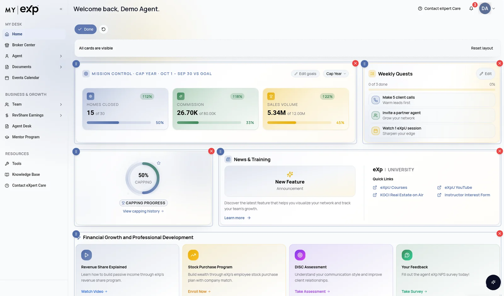
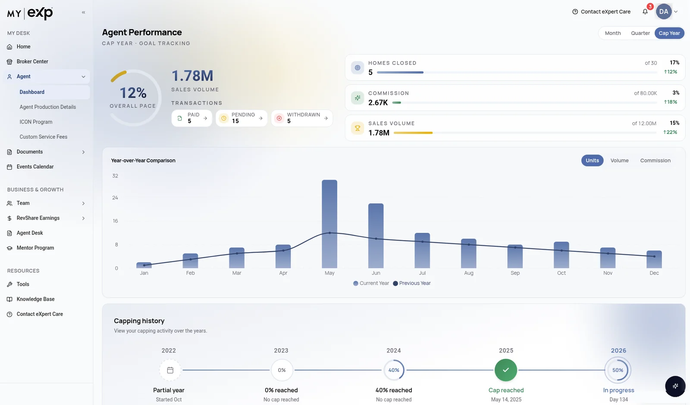
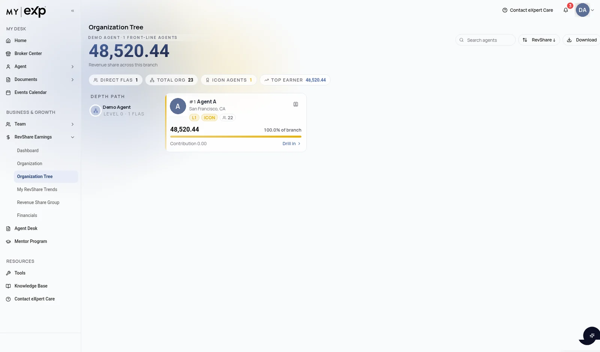
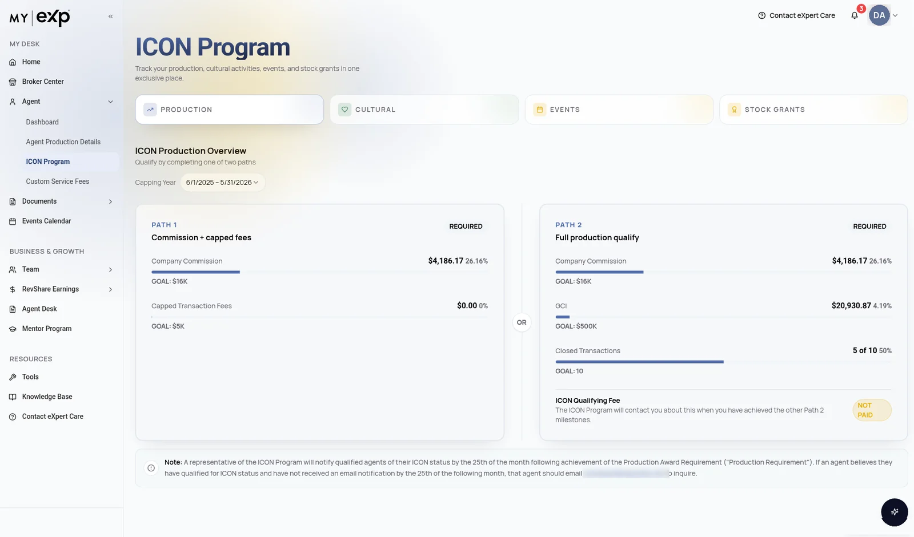
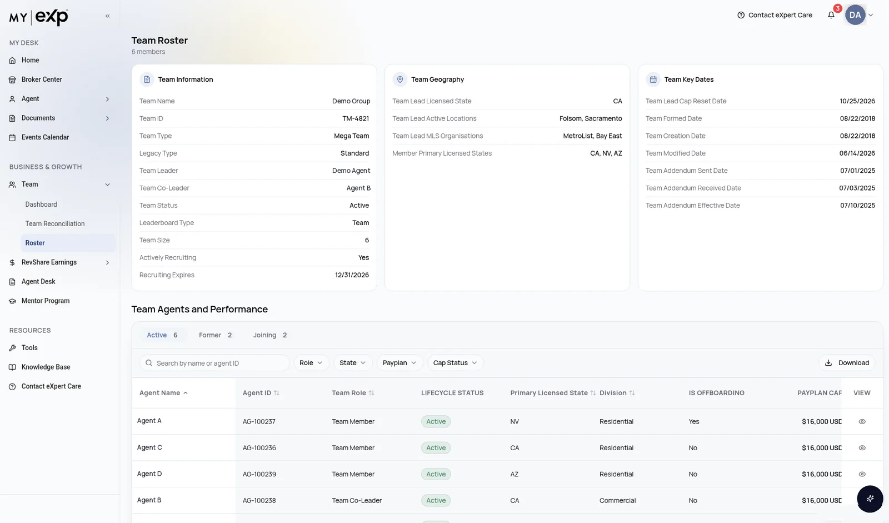
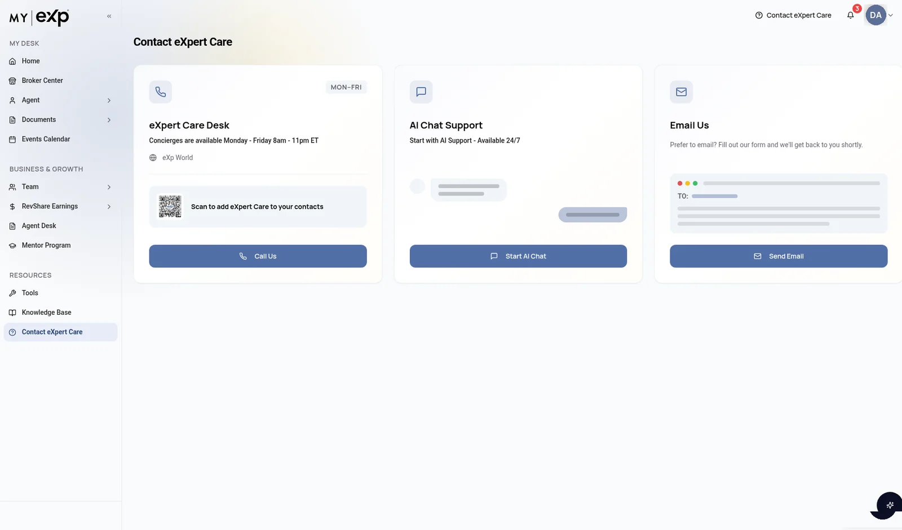
Mira everywhere
A layer, not a destination.
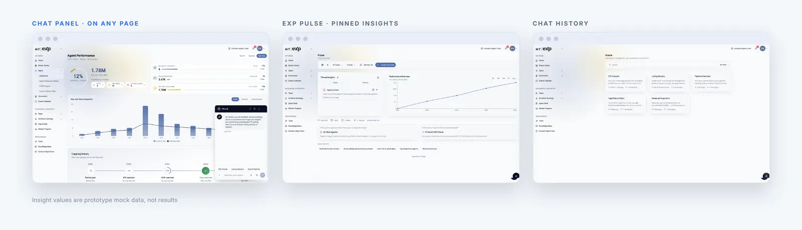
Never an empty chat box
New agents don't know what to ask, so Mira asks first. The opening line and the starter prompts change with the page the agent is on, and every answer suggests where to go next.
- Page-aware openers Mira introduces itself in terms of the page: transactions on Transactions, cap and award tiers on ICON, earnings and sponsor tree on RevShare.
- Starter chips Three one-tap prompts per page, so the first question is never a blank box.
- Follow-ups, not dead ends Each answer with a chart offers two next questions, for example “How does this compare to my team?”
- Keep what's useful Agents can pin an insight to Home. Mira confirms it and offers “View on Dashboard”. Past chats are searchable in History, and there's a voice mode for hands-busy moments.
- 01
Agent Performance
Opens with insights you can pin to your dashboard. Prompts: GCI Trends, Listing Velocity, Active Pipeline.
- 02
Transactions
Opens with pending deals, closing timelines, volume. Prompts: Pending Deals, Closed This Month, Avg Days to Close.
- 03
ICON Program
Opens with cap status, production goals, award tiers. Prompts: ICON Progress, Cap Status, Production Goals.
- 04
RevShare
Opens with earnings, organization growth, sponsor tree. Prompts: RevShare Earnings, Organization Growth, Sponsor Tree.
- 05
Team
Opens with team performance, top producers. Prompts: Team Performance, Top Producers, Team Volume.
From the latest Lovable prototype. Answers there are scripted, and the figures are mock data.
Edge cases
One Home, many agents.
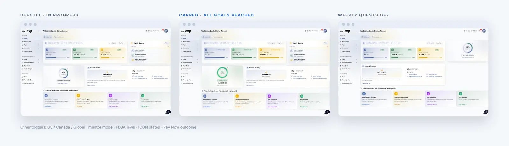
A Demo Toggles panel switches the prototype between the states real agents hit, so stakeholders and testers review edge cases before anything is built: Canada disclaimers, capped celebrations, empty quests, failed payments.
- Country: US / Canada / Global
- Capped / uncapped
- Mentor mode
- FLQA level
- Distribution
- Getting started
- Weekly quests
- Squad
- Transactions
- ICON states
- Pay Now success / failure
- Locale EN / ES / FR
- Light / dark theme
Test & evaluate
Early signals, 27 thumbs, and the go-live decisions they shaped.
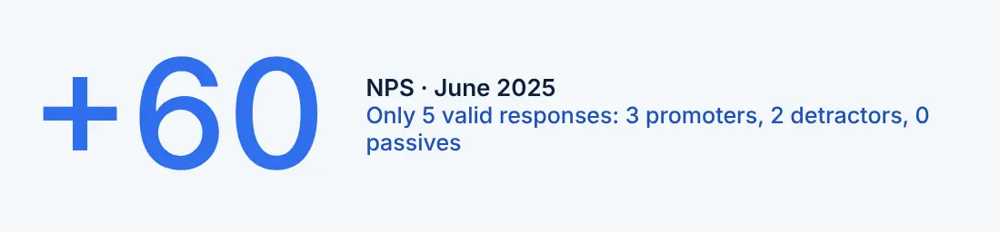
Promoters (scores of 10) often cited internal alignment and their commitment as recruiters. Detractors raised missing features and an inconsistent experience. Asked for: transparency in agent support, mentioned more than once, and UI improvements such as resource links and visual clarity.
Negatives: mostly generic fallbacks
Fallback failures: “Having trouble”, “rephrasing”, “connect” were mostly generic fallback messages. Apology loop: “Sorry”, “expert”, “care” came from a default apology flow when Mira had no answer. Technical errors: standard error responses that didn't resolve the question.
Positives: specific and personal
Performance and metrics: performance summaries and metrics queries landed well. Personal data: answers that came back with the agent's own, accurate data.
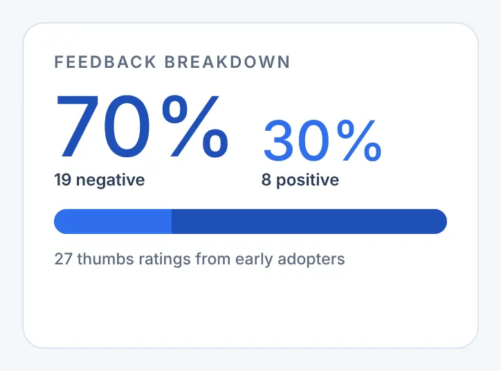
The feedback didn't reject the idea. It rejected the moments when Mira didn't know the answer. The answers people liked were specific and personal. The ones they disliked were generic fallbacks. That set our go-live priorities.
How I read 27 thumbs
Too few for a score. Enough to show a pattern.
- 01
Count honestly
27 ratings: 8 up, 19 down. That's too few for a score but enough to show a pattern.
- 02
Group by what Mira said
Not by what agents asked. The same words kept coming back in negative answers: “having trouble”, “rephrasing”, “connect”, “sorry”, “expert care”.
- 03
Name the failure
Those words pointed to three kinds of failure: generic fallbacks, a default apology loop, and technical error messages. None of them was about a bad idea.
- 04
Turn it into priorities
The positives were specific and personal. That gave us the go-live order: data accuracy, response quality, session context, and keeping feedback coming in.
Testers checked Mira against its three data sources from 29 September to 10 October: My eXp (productivity data), SkySlope (transactions) and eXpert Care (knowledge base).
Going live
Ship less, get it right.
Data accuracy. Numbers must match My eXp, SkySlope and the knowledge base.
Response quality. Fewer generic fallbacks, more direct answers.
Session context. Mira remembers what you asked earlier in the session.
Feedback. Keep in-chat thumbs coming in to steer fixes.
Scope cuts: hide trending topics, and hide the Performance, Transactions and Marketing explore pages. Rollout: Mastermind agents first, launched as “first access”, not a full release.
The trade-off: trending prompts were rated very important by 4 of 5 early adopters, yet we hid trending topics at launch. We chose to ship less and get it right, because accurate answers mattered more than more features.
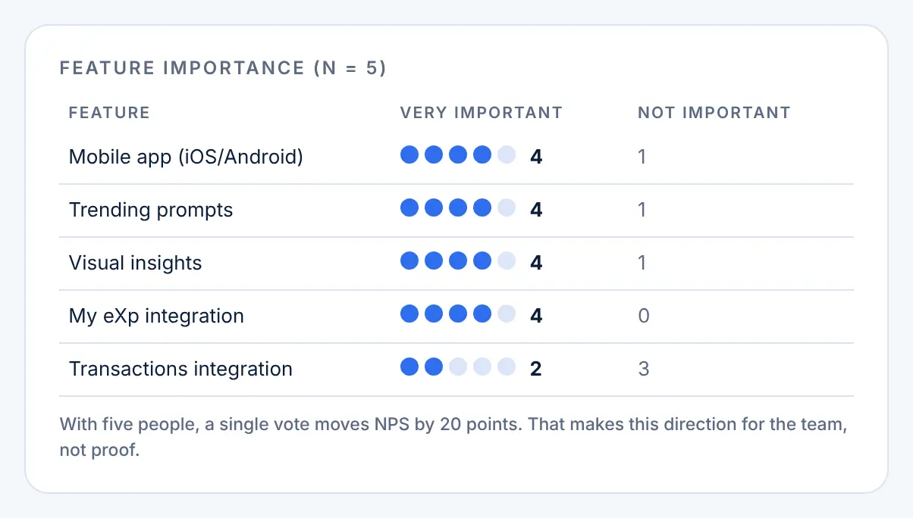
The “I don't know” moment
If people judge an assistant by its worst answer, the fallback is a core screen.
Before
A generic “having trouble, try rephrasing” message, or an apology that pointed to eXpert Care and stopped there.
Designed
Say what Mira can help with, offer example questions to tap, and when it really can't help, hand the agent to a person in one step. This is how the latest prototype handles a question it doesn't recognise.
Contact eXpert Care puts “AI Chat Support, available 24/7” (Mira) next to the concierge desk and email. The email form includes an “Unsure” option, so agents don't have to know the right department. In the Hey eXp voice spec, “I need help” triggers a Slack or HubSpot support escalation.
In the pre-launch test program, testers checked Mira's answers against My eXp, SkySlope and the eXpert Care knowledge base. Data accuracy was the first go-live priority. We hid trending topics and the explore pages, and launched as first access to Mastermind agents. Mira's release goes through the same readiness gates as any AI application.
Trust is a release practice
The outage log is why trust came first.
Between early March and early April 2025 the HUB outage log records six Sev1 incidents and one Sev2, across production and lower environments: a data-services release that took production down, test environments blocking demos, a login misroute, and transaction data arriving late.
Planned key results track hotfixes, active users, test coverage, support tickets and aNPS. No values have been recorded yet: year-over-year hotfixes by month, active users by month, automation and unit test coverage, support ticket volume against a February baseline, and My eXp aNPS.
Release validation is a gated, assisted process. A Release Validation Bot prepares the Application Release card set and runs readiness gates before each release. My eXp / My eXp Plus is classed as an AI application with Approval, Pre, Post and UAT cards. Mira and My eXp share one release invite but are assessed independently. This comes from the bot's process spec. No validation-run results are recorded.
- Release structure The AR card set is complete.
- Work is done Every non-AR issue on the fix version is Done.
- Tests pass Zephyr test cases are Done.
- UAT questions Front-end change, validatable data, business rule, third party: any yes needs proof that customers were made aware.
- Sign-offs QA Approved and Product/Production Approved comments.
- Code review Full diff review of every PR, with one comment per PR.
What's next
What shipped is a first door. These are still ahead.
Hey eXp: voice MVP
Hands-free, voice-activated access to common agent workflows during the commute, while multitasking or out in the field.
BoldTrail Smart Contacts
A vision for bringing Mira together with BoldTrail Smart Contacts.
Mobile app
The top request: 4 of 5 early adopters rated a mobile app very important.
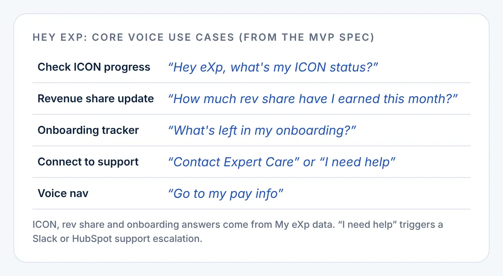
What I'd do next with AI
Recommendations, not shipped work.
- 01
Ask why on a thumbs-down
Add one-tap reasons (wrong number, didn't answer, too generic) so each “no” tells us what to fix.
- 02
Track the fallback rate
Measure how often Mira says “I don't know” and how often that ends with a person helping, not just the overall thumbs-up rate.
- 03
A standing test set
Keep a set of real agent questions with known answers from the three sources, and run it before each release, next to the UAT gate.
- 04
Show the source on every answer
A small “from My eXp” or “from SkySlope” label with a timestamp, so agents can trust the number without leaving the chat.
What I learned
An assistant is judged by its worst answer.
- 01
Get “I don't know” right
Most of the 70% negative ratings came from fallbacks, not wrong ideas. Getting “I don't know” right is part of the design.
- 02
Small samples are signals, not scores
+60 from 5 people told us where to look, not how well we were doing. The n belongs next to the number, every time.
- 03
Cutting scope is a design decision
Hiding trending topics and the explore pages let us launch something accurate, to Mastermind agents first.
- 04
Navigate, don't replace
Opening external apps in a new tab kept Mira honest about what it is: a front door, not another system.
- 05
Prototype the edge cases
Toggles for Canada, capped and empty states made reviews about real agents, not a demo account.
Next project
Next project
Perfect PropertiesA responsive web app that simplifies the home ownership experience for new buyers.